深度学习基础
语义分割和实例分割¶
- 语义分割:把图像中的每个像素赋予
一个类别标签，只能判断类别，无法区分个体
- 实例分割：类似物体检测，不需要对每个像素进行标记，它只需要找到感兴趣物体的边缘轮廓就行，因此我们可以区分出单个个体。
- 全景分割:语义分割+实例分割，我们可以知道哪个像素属于哪个类中的哪个实例。
感受野¶
- 概括来说就是特征图上的点能看到原始图像的多大区域。
3个3x3卷积，保持滑动窗口步长为1,其感受野和7x7卷积一样
- **TridentNet**中证明了：不同尺度物体的检测性能和
dilation rate正相关！也就是说，更大的receptive field(感受野)对于大物体性能会更好，更小的receptive field(感受野)对于小物体更加友好。
卷积层¶
N = (W − F + 2P )/S+1
池化层的反向传播：https://blog.csdn.net/Jason_yyz/article/details/80003271
空洞卷积¶
- 空洞卷积:在增加感受野的同时保持特征图的尺寸不变，从而替代池化与上采样操作。
- 一个3×3卷积，却可以起到5×5、7×7等卷积的效果。可以看出，空洞卷积在不增加参数量的前提下，增大了感受野。假设空洞卷积的卷积核大小为k，空洞数为d，则其等效卷积核大小k’计算如式:
空洞卷积的缺点
- 网格效应（Gridding Effect）：由于空洞卷积是一种稀疏的采样方式，当多个空洞卷积叠加时，有些像素根本没有被利用到，会损失信息的连续性与相关性，进而影响分割、检测等要求较高的任务。
- 远距离的信息没有相关性：空洞卷积采取了稀疏的采样方式，导致远距离卷积得到的结果之间缺乏相关性，进而影响分类的结果。
- 不同尺度物体的关系：大的dilation rate对于大物体分割与检测有利，但是对于小物体则有弊无利，如何处理好多尺度问题的检测，是空洞卷积设计的重点
解决方案:典型的有图森未来提出的HDC（Hybrid Dilated Convolution）结构。该结构的设计准则是堆叠卷积的dilation rate不能有大于1的公约数，同时将dilation rate设置为类似于[1,2,5,1,2,5]这样的锯齿类结构。此外各dilation rate之间还需要满足一个数学公式，这样可以尽可能地覆盖所有空洞，以解决网格效应与远距离信息的相关性问题，具体细节可参考相关资料.
转置卷积¶
尽量模型中不要有**反卷积(转置卷积)**(会有锯齿问题出现)，可以使用上采样+卷积的方式代替，DBFaceV2中就使用了这种方式。转置卷积是普通卷积的反向操作：
边框回归¶
- 我们的目的是P框回归到G框，如何做呢？
-
我们需要寻找一种变换
G^,使得P==G^,G^约等于G，这个G^就是我们的所要求的预测框。如何做呢？ -
平移(dx,dy)+尺度缩放(dw,dh)，就是我们要学习的四个参数
-
我们已知的
P->G的平移量和尺度缩放量如下：
为什么叫做线性回归呢？
边框回归输入的什么？
- 注意输入的是先验框对应的特征图向量(Φ)，而不是
Px,Py,Pw,Ph坐标。
Loss函数
-
dx,dy,dw,dh如何获得？W*表示要学习的参数Φ5(P)表示输入的特征图
-
所以，函数最终的优化目标为：
FLOPs(计算量)和模型参数计算¶
FLOPS：注意全大写，是floating point operations per second的缩写，意指每秒浮点运算次数，理解为计算速度。是一个衡量硬件性能的指标。FLOPs：注意s小写，是floating point operations的缩写（s表复数），意指浮点运算数，理解为计算量。可以用来衡量算法/模型的复杂度。由于目前模型计算能力巨大，所以通常使用GFlops来衡量算法性能，其表示**十亿**（=10^9）次的浮点运算GMACs = 0.5 * GFLOPs
FLOPs计算(一般越小越好)
- 卷积层:
C_i:input_channel,K:kernel_size,H*W:feature_map,C_o:output_channel
-
括号里是计算
output_feature的一个pixel的浮点运算数:卷积一次会有C_i*K^2次乘法和C_i*K^2 - 1次加法(n个数相加，要加n-1次)，如果不考虑bias，会有一个-1，如果考虑bias，这个一会被中和掉，最后括号内会变为(2*C_i*K^2) -
全连接层：
I:input neuron numbers, O:output neuron numbers
模型参数计算(一般越小越好)
- 基本卷积:
k*k（卷积核参数）*C_in(卷积核维度)*C_out(卷积核输出维度)[+c_out(bias个数)]
FLOPs小并且参数量少的网络一定速度快吗？
-
在设计轻量级网络时，FLOPs和模型参数是主要考虑因素，但是减少模型大小和FLOPs不等同于减少推理时间和降低能耗。比如ShuffleNetv2与MobileNetv2在相同的FLOPs下，前者在GPU上速度更快。所以除了FLOPs和模型大小外，还需要考虑其他因素对能耗和模型推理速度的影响，例如:内存访问成本（Memory Access Cost，MAC）和GPU计算效率:DensNet的变体:VoVNet/Pelee
-
MAC计算:shuffleNet V2论文中给出了计算方式:
DenseNet因为密集链接会聚合前面所有的layer，这导致每个layer的输入channel数线性增长。concat操作B尺寸必须是固定的，才能进行通道连接。
-
Densnet慢也好理解:需要进行多次Concatnate操作,数据需要被复制多次，显存容易增加得很快
-
GPU计算效率
GPU计算的优势在于**并行计算机制**，这意味着当要计算的tensor较大时会充分发挥GPU的计算能力。如果将一个较大的卷积层拆分成几个小的卷积层，尽管效果是相同的，但是却是GPU计算低效的。所以如果功效一样，尽量采用较少的层。比如MobileNet中采用深度可分离卷积（depthwise conv+1x1 conv）虽然降低了FLOPs，但是因为额外的1x1卷积而不利于GPU运算效率。相比FLOPs，我们更应该关注的指标是FlOPs per Second，即用总的FLOPs除以总的GPU推理时间，这个指标越高说明GPU利用越高效。
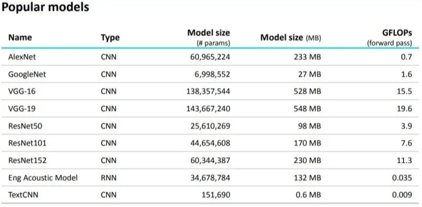
交叉熵=熵+KL散度详解¶
熵:就是一个事件所包含的**信息量**。例如:“我不会死亡”，信息量很大；“我是我妈生的”，信息量为0；独立事件的信息量可以叠加(一句话:a->张三喝了酒，b->李四吃了馒头)，a,b是独立事件，这句话的信息量就是a的信息量+b的信息量，因此熵的定义为:
KL散度：衡量两个事件/**分布**之间的不同，有时也称为KL距离(事件a和事件b的不同程度)，但不具备对称性；距离的对称性:A到B的距离等于B到A的距离
交叉熵
- 为什么用交叉熵做损失函数而不用KL散度？
- A是真实的数据分布，B是模型预测测数据分布
- 训练数据A的分布式给定的，也就是A的熵S(A)是常量，此时KL散度和交叉熵等价(因为此时熵对于模型来说是一个不可优化的常数项)。
Focal Loss¶

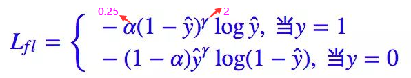
Focal Loss主要是在原有交叉熵损失的基础上加入了gamma因子和alpha因子，其中gamma因子主要是控制困难样本挖掘的，alpha因子主要是平衡正负样本比例不均衡的。
- 困难样例挖掘，加入
gamma因子

- 对于正样本而言，预测结果
y'=0.95肯定是简单样本，1-0.95的alpha次方就很小，损失函数就很小;如果y'=0.35肯定是困难样本，1-0.35的alpha次方相对简单样本会较大，损失也会相对较大，这样就会更加关注困难样本。 -
对于负样本而言，预测结果
y'=0.05肯定是简单样本，0.05的alpha次方就很小，损失函数就很小;如果y'=0.75肯定是困难样本，0.75的alpha次方相对简单样本会较大，损失也会相对较大，这样就会更加关注困难样本。 -
平衡正负样本比例不均衡，加入平衡因子
alpha
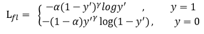
alpha=0.25，通过控制平衡因子大小来平衡loss
Label Smoothing¶
对于多分类而言，我们常用交叉熵损失函数，label标签常常制作为one-hot编码，但这样做网络会驱使自身往正确标签和错误标签差值大的方向学习，存在一个问题，就是在训练数据不足以表征所以的样本特征的情况下，这就会导致网络过拟合。所以做了软化措施:label smooth的思路“做软化、防止过拟合、增加扰动”，最终通过**抑制正负样本输出差值**，使得网络能有更好的泛化能力。
Wing loss¶
一般而言人脸关键点loss尝尝是l2 loss或者smooth l2 loss,但是尝尝因为**人脸姿态角度多样**而导致的检测精度不高，使用wing loss可以很好解决离群点(large error)问题和small error问题。
L2 loss或者smooth l2 loss在0附近(small error)的gradient变化趋于平缓的，更不容易优化；而且L2 loss很容易受离群点(large error)影响wing loss分段函数，当两点距离过远时，为了避免loss过大(large loss)使用|x| - C来限定loss不要过大；当|x|<w时，small error时使gradient变化陡峭，使得模型可以继续优化。
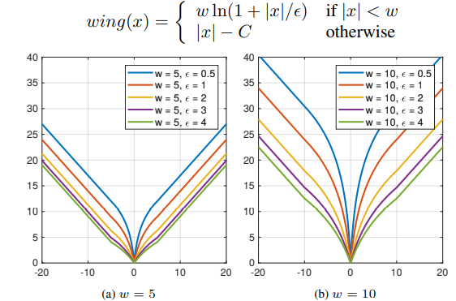
小目标难检测的原因¶
传统的分类网络为了减少计算量，都使用到了下采样，而下采样过多，会导致**小目标的信息在最后的特征图上只有几个像素（甚至更少）**，信息损失较多
Prior box概念¶
先验框，就是anchor box的概念:针对feature map中的每个点作为一个cell，通过等比放缩的方法来找到原图像中对应的位置，然后将cell作为一个中心点，提取出不同尺度的bounding box候选区域，这些候选区域叫做Prior box。针对每一个Prior Box和真值GT比较会得到label。对于cell会对应到不同的Prior Box，分别当前Prior Box预测类别概率和坐标(x,y,w,h).
Kmeans聚类¶
kmeans与kmeans++聚类:博客
kemeans聚类出k类长宽(不是长宽比)即可,由于数据集中图片大小可能不同，需要先归一化box的宽高:·=w=w_box/w_img,h=h_box/h_img，kmeans聚类的衡量指标是d = 1 - IOU(因为我们只关心pre_box与gt_box的iou，且iou越大表示距离越近)，计算IOU时，不用管box的位置，我们假设所有box的左上顶点都在原点

Kmeans(缺点:对种子点的初始化非常敏感)- 随机选取
K个box作为初始anchor； - 使用
1 - IOU度量，将每个box分配给与其距离最近的anchor； - 计算每个簇中所有
box宽和高的均值，更新anchor； - 重复2、3步，直到anchor不再变化，或者达到了最大迭代次数
kmeans++- 随机选取
1个box作为初始anchor； - 使用
1 - IOU度量，计算box与最近的聚类中心的距离D(x)； 选择D(x)较大的点作为新增的聚类中心，注意不要选择最大值(排序按照概率值选择)，可能是异常点- 重复2~3，直到k个聚类中心被选出来
- 利用这
k个初始的聚类中心来运行标准的k-means算法
常用激活函数¶
ReLU/LeakyReLU/PReLU
-
a_i=0:ReLU;a_i=0.01:LeakyReLU;a_i=超参数可训练更新:PReLU -
BP更新ai时，采用的是带**动量**的更新方式
CReLU
论文中提出，网络在浅层的时候参数分布呈现较强的负相关性(更倾向于同时捕获正负响应的信息)，如果浅层使用ReLU的话会抹掉负响应，会造成卷积核存在冗余，解决:CReLU；随着网络变深，这种负相关性逐步减弱。

Swish激活函数
Swish 在深层模型上的效果优于 ReLU。可以看做是**介于线性函数与ReLU函数之间的平滑函数**，例如，仅仅使用 Swish 单元替换 ReLU 就能把 Mobile NASNetA 在 ImageNet 上的 top-1 分类准确率提高 0.9%，Inception-ResNet-v 的分类准确率提高 0.6%。
Mish激活函数
一种自正则的非单调神经激活函数，平滑的激活函数允许更好的信息深入神经网络，从而得到更好的准确性和泛化。根据论文实验，该函数在最终准确度上比Swish(+0.494%)和ReLU(+ 1.671%)都有提高。
目标检测MAP计算¶
主要是TP+FP有用

AP值计算
- 预测值（Dets:所有预测框）：物体类别、边框位置的4个预测值、该物体的得分。
- 标签值（GTs）：物体类别、边框位置的4个真值。
- 在遍历完所有的预测框后，我们会得到每一个预测框的属性，即**TP或FP**
一个例子为：R=“所有好瓜中有多少比例被挑出来”，P=“挑出来的西瓜中有多少比例是好瓜”
-
召回率(Recall,R)
-
准确率(Precisioin,P)
-
P-R曲线
-
AP计算:召回率高的时候准确率会很低，准确率高的时候往往召回率很低(把某类的所有预测框(数据库的所有图片,不是每张图片单独计算出AP再平均)按照score从大到小排序，索引从0开始，召回率逐渐增大:检测对的框越来越多，精准率逐渐下降:误检框越来越多）
-
07的是11points method:使用11个不同召回率对应的准确率求平均的方式求AP -
2010的area方式:求面积的方式，求积分很麻烦，用下面的方式容易。 -
MAP计算:每个类别的AP是相互独立的，将每个类别的AP进行平均，即可得到mAP
ROC曲线¶
-
正类和负类:假设阈值为
0.6,得分大于等于0.6的为正类，小于0.6的为负类 -
ROC曲线的横纵坐标 -
纵坐标
真正率-TPR:预测为正实际为正占所有正实例的比例:p=1,gt=1/all(gt=1) -
横坐标
假正率-FPR:预测为正实际为负占所有负实例的比例:p=1,gt=0/all(gt=0) -
每个阈值代表一对
(FPR,TPR),阈值无穷大时预测无正例FPR=TPR=0，阈值为0时预测无负例FPR=TPR=1,一般随着阈值逐渐增大，正例越来越少，横坐标减少的更快

-
如何画
roc曲线，一般选取range(0.1,1,0.001)共计90组阈值，计算AUC:(Area under Curve)，是个概率值[0,1],越大分类效果越好。 -
为什么使用
ROC曲线而不使用PR曲线？原因:当测试集中的正负样本的分布变换的时候(例如负样本数量增大10倍)，ROC曲线能够保持不变,但是PR曲线巨变
NMS及其变体link¶
NMS：直接把iou大于阈值(常0.5)的框踢掉(得分置为0)
- 根据置信度降序排列候选框列表
- 选取置信度最高的框A添加到输出列表，并将其从候选框列表中删除
- 计算A与候选框列表中的所有框的IoU值，删除大于阈值的候选框(相当于得分直接置为0)
- 重复上述过程，直到候选框列表为空，返回输出列表
- 对重叠物体效果不好(行人/猪只等)，会导致漏检增多
soft-nms：iou大于阈值的框得分不置为0(对于重叠目标这个框可能有用)，而是更具IOU大小以某种函数衰减，IOU越大得分越低，衰减越严重。
-
假设一个图中有三个框，得分为
0.9,0.7,0.85，经过soft-nms第一次处理变为0.9,0.65,0.55(如果是nms:0.9,0,0)，然后再循环即可，这样就不会删除框，最后通过阈值删除得分低的框即可。 -
衰减函数常用的两种方式:
linear: result_score = base_score - base_score*iou-
gausian:result_score = base_score * np.exp(-iou**2 / sigma:0.5) -
效果展示:问题就是置信度的阈值如何选择，作者在这里依然使用手工设置的值，依然存在很大的局限性
WBF(比赛专用:Weighted Boxes Fusion)code
加权边框融合，常用于融合多个模型对同一张图片的框预测，或者单个模型不同尺度的结果融合，比NMS慢3倍。
-
每个模型的每个预测框都添加到
List B，并将此列表按置信度得分C**降序**排列 -
建立空
List L和list F（用于融合的） -
循环遍历
B，并在F中找到与之匹配的box（同一类别MIOU > 0.55:最佳阈值） -
如果
step3中没有找到匹配的box就将这个框加到L和F的尾部，如果step3中找到了匹配的box就将这个框加到L，加入的位置是box在F中匹配框的Index；L中每个位置可能有多个框，需要根据这多个框更新对应F[index]的值，其实list L称为dict L更好。更新方式如下(对坐标值根据置信度求和):
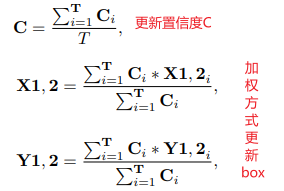
- 遍历完成后对
F中的元素再进行置信度得分的缩放，减少某些box只被少数模型预测到的置信值(如果群集中的多个框得分较低，则可能意味着 只有少数模型可以预测。 因此，我们需要降低此类情况的置信度得分)。
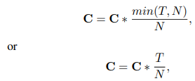
Bn and GN¶
BN
研究者发现，网络越深越难收敛，只有通过较小的学习率和初始化参数才能得到相对较好的结果，经研究每次反向传播参数迭代更新后，前一层网络输出数据经过该层网络后数据分布会发生变化，为下一层网络的学习带来困难(网络层本质就是学习数据分布，分布一直变就难收敛)。
Batchnorm以加速收敛速度和模型稳定性而出名，它能突出数据分布之间的相对差异；如果单独的对每层进行归一化就会破坏模型本身所学得的特征，导致学不到任何东西，BN的成功在于引入了缩放量γ 和平移量β来恢复原始特征。
bn在训练过程和推理过程是如何设置方差和期望的？
- 训练过程:
[batch,N,H,W]，batchnorm层是在batch维度上进行norm的，所以归一化的是[N,H,W]，即对batch中的channel做归一化。第一个样本的第一个通道，加上第二个样本的第一个通道.....,第N个样本的第一个通道，得到第一个通道的均值（除以NxHxW而不是单纯除以N，最后得到的是代表这个batch的第一个通道的平均值的数字，而不是一个HxW的矩阵）。同样的方法求出方差。注意求得的均值方差不是一个值，而是通道个数个值 - 推理过程:用的是所有mini-batches**训练样本**均值和方差的**累计滑动平均结果**，这样的话单样本也能预测。
# momentum : 动量参数，一般为0.9， 0.99， 0.999
# pytorch的BN中常有以下变量。
# running_mean ：滑动平均的方式计算新的均值，训练时计算，为测试数据做准备
# running_var : 滑动平均的方式计算新的方差，训练时计算，为测试数据做准备
running_mean = momentum * running_mean + (1 - momentum) * x_mean
running_var = momentum * running_var + (1 - momentum) * x_var
GN:Group Normbalization
BN的缺点
BN是以batch为主的，过小的batch size会导致其性能下降(一般来说每个gpu上batch_size=32最合适)，但对于大型的网络，尤其是检测网络，batch_size有的设置成2,4就占满显存
- 预测时，均值方差是用**训练集的滑动平均**求得的，如果当训练数据和测试数据分布有差别时，结果就会不好
GN的归一化方式避开了batch size对模型的影响，特征的group归一化同样可以解决数据分布差异的问题，并取得较好的效果。小的batch size可以考虑使用GN
通道剪枝¶
思想:每个卷积层有很多通道，这些通道有可能是冗余的，想法对于每一个通道引入一个缩放因子gamma,然后和通道的输出相乘，接着联合训练网络权重和这些缩放因子，最后将小缩放因子的通道直接移除，微调剪枝后的网络即可，因为conv+bn是一般网络的标配，所以可以把BN层的gamma系数作为缩放因子来进行L1正则。
# pytorch对BN层进行L1正则化
def updateBN(model):
for n, m in model.named_modules():
if isinstance(m, nn.BatchNorm2d):
# torch.sign是判断正负的，大于0的返回1，小于0的返回-1
m.weight.grad.data.add_(args.s*torch.sign(m.weight.data)) # L1
- 我们先对所有
bn层缩放因子gamma的绝对值排个序，然后取从小到大排序的缩放因子中70%（剪枝比）的位置的缩放因子为阈值。
剪枝方式
剪枝后每层通道剩余，至少为1，或者可以设置为2^x数目，这样较稳定但牺牲了部分压缩率
- 恒定
s剪枝:一直以固定的L1惩罚系数s=0.01 - 全局
s衰减剪枝:s = s if epoch <= opt.epochs * 0.5 else s * 0.01，超过epochs/2后惩罚系数衰减100倍，使得精度稍微恢复。 - 局部
s衰减剪枝:超过epochs/2后对85%的通道(所有bn通道s排序)保持原始恒定惩罚系数s压缩，15%的通道进行s衰减100倍的压缩(85%是个先验知识，一般这个压缩率是最佳的)。
知识蒸馏(分类/回归用)¶
只蒸馏一个输出层
-
要蒸馏的小模型，以大模型的输出的概率向量(
soft target:软标签->拥有不同类之间关系的信息)为学习目标，因为one-hot包含的信息量很低[0,1]（类似label smooth），因为负标签也带有大量信息。 -
如何做，在训练的时候在
softmax中增加温度参数T，推理的时候T=1，优化L_soft的时候常用KL散度计算Loss:交叉熵=KL散度+熵，one-hot标签的真实信息熵是固定的所以用交叉熵代替KL散度，但是soft label的信息熵是teacher网络生成的，不是固定的，所以必须用KL散度。


- 温度
T:越小越放大正样本，越大越放大负样本(即放大小概率值分量所携带的信息)。
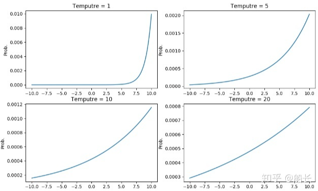
精度更高的模型蒸馏小模型提升点更少，原因分析：

Teacher更复杂，Student没有足够的能力来模仿TeacherTeacher的精度更高，模型确定性更强，输出logits（soft label）变得less soft，趋近于one-hot- 解决方案:可以利用超大模型作为**助教网络**辅助蒸馏(超大网络作为
Teacher,大网络作为Teach-Assistant，小网络作为Student) - 首先对超大网络对大网络进行蒸馏(大网络的选取和超大网络相差不要太大(
7倍以上)，不然也蒸不出来) - 再用整理好的大网络对最终的小网络进行蒸馏
多个Teacher模型如何蒸馏link
- 将多个teacher模型的预测概率（softmax后输出）求平均值来进行蒸馏，效果好于随机选一个teacher模型进行蒸馏。

输出层和特征层一起蒸馏
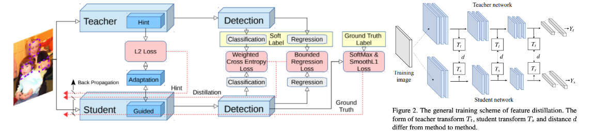
- 对于T和S中间特征图输出维度不匹配的问题，采用在
S网络输出接一个转换器(conv+bn+mish)，将其升维到T网络匹配，T的话直接接一个mish保证激活函数相同(mish=x*tanh(ln(1+e^x)))。loss:nn.MSE-->预测数据和原始数据对应点误差的平方和的均值
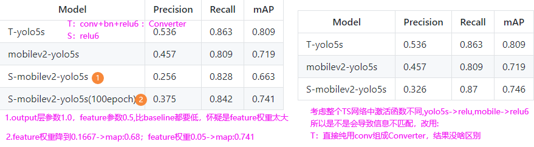
FP32扫盲¶
位，字节解释:1位=1bit=0/1(一个0或1就代表一位)，1Byte(字节)=8位=8bit
fp32组成=1符号位S[ ] + 8指数位e[ ] [ ] [ ] [ ] [ ] [ ] [ ] [ ] + 尾数f[ ]*23
-
1符号位，只有0/1，float和double符号位均为1位，0代表正数，1代表负数 -
8指数位表示指数部分，存储科学计数法中的指数部分，采用移位存储，指数范围:[-127,128] -
23尾数表示小数部分，存储科学计数法中的尾数部分:
int8量化¶
在神经网络中的基本操作就是权重和激活值的卷积乘加操作
模型量化主要包括两个部分，一是针对权重Weight量化，一是针对激活值Activation量化，在一些文章中已经表明了将权重和激活值量化到8bit时就可以等价32bit的性能。
本次介绍的是静态离线训练在预测前**使用量化校准集进行模型激活值分布的统计**，确定激活层的量化参数的方式。
FP32占用4个字节共32位;FP16占用2个字节共16位;int8占用1个字节共8位;|量化方法汇总|TensorRt量化详解
简介
量化不是新东西，我们做图像预处理就用到了量化；**反量化:**一张图片(0-255)→归一化(0~1)；**量化:**反过来，量化本质上只是对数值范围的重新调整，是一种映射关系。
举个简单例子，量化到底在量化什么？
一图胜千言，卷积量化是对输入的tensor和weight参数都需要进行量化，将计算层的输入进行离散化，原本32bit浮点数的乘加操作变为8bit的整数乘加操作，减少了模型推理的计算量
公式解析
# 1. 线性量化公式：FP32 数值（Tensor Values）被表示成 INT8 数值（INT8 array）乘以量化因子加上一个量化偏，两个参数均为 FP32 类型。
Tensor Values = FP32 scale factor * INT8 array + FP32 bias
# 2.利用上述的公式可以表示神经网络中两个矩阵相乘
A = scale_A * QA + bias_A
B = scale_B * QB + bias_B
A * B = scale_A * scale_B * QA * QB + scale_A * QA * bias_B + scale_B * QB * bias_A + bias_A * bias_B
# 2.1 NVIDIA研究员实验表明:并不需要在量化的时候加上偏置(我理解:偏置只是改变数值的分布位置),公式简化
A * B = scale_A * scale_B * QA * QB # QA、QB=F32A/scale_A、F32B/scale_B
# 所以最终的问题就变成了如何得到量化参数scale factor的问题
如何选取合适的scale?
- 上面是按照绝对值最大值作为阀值，但是当正负分布不均匀的时候，是有一部分是空缺的，也就是一部分值域被浪费了(考虑极端:激活值全为正)，于是大多数情况下是这么干的:
- 选择合适的阈值T后,将
±|T| 映射为±127,超出 阈值±|T|外的直接映射为阈值±127，**如何寻找最优的阀值T使得精度的损失最小呢？这就变成了最优化问题，我首先想到的是损失函数，而且是前后两者的分布差异最小，那么用相对熵(KL散度)|博客1|博客2:用于**衡量两个概率分布之间的差异，即用相对熵来描述int8量化后的值分布跟f32的值分布之间的信息量丢失程度, KL散度越小代表 INT8编码后的信息损失越少。 - 截断区(
-T~T)之外的值为什么要加到截断区内最后一个值呢？- 一是求P的概率分布时，需要总的P总值.
- 二将截断区之外的加到截断P的最后，这样是尽可能地将截断后的信息给加进来。
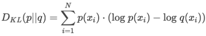
def get_KL():
# 随机生成两个离散型分布
x = [np.random.uniform(1, 11) for i in range(10)]
px = x / np.sum(x)
y = [np.random.uniform(1, 11) for i in range(10)]
py = y / np.sum(y)
KL = 0.0
for i in range(10):
KL += px[i] * np.log(px[i] / py[i])
if KL < 0.1:
print(x)
return KL
-
这样问题就转换为了求概率了，即事件q（int8）分布的概率以及事件p（f32）分布的概率。
-
直方图(
hist,bin_edges=np.histogram(arr,bins=xx,range=(min,max)))，(频数,分界箱边界)，即落到某个数值范围的数值有多少个，这样数据的概率分布就出来了。
-
int类的离散点各个概率还好求一些，直接统计这些整型数据集合hist即可
-
float呢？精度理论上是很小的呀，如何定边界才能把数据归类好？因此就类似于整型的我们分bin，那么分多少个bin才能求bin的概率？看下图，bins越多当然你和的越好，但算力有限啊，NVIDAIA给的是**2048**个bin（maxnet代码里面给的是**8000**bins），比128bin要多，但是又不会多处太多从而迭代太多影响计算速度！
-
NvidiA处理流程
- 提供一个样本数据集（最好是验证集的子集:500/1000张就差不多了，但要保证多样性），称为“校准数据集”，它用来做所谓的校准。首先在 校准集上 进行
FP32 inference推理，然后对网络每层遍历 - 收集这一层的激活值(经过激活函数之后的值)，并做 直方图（histograms ），分成几个组别（bins）（官方给的一个说明使用的是2048组/maxnet是8000），分组是为了下面遍历 |T| 时，减少遍历次数(要不然你每一个值都测试一次，那么一定范围内的浮点值有无穷个你怎么测？)；
- 对于不同的 阈值 |T| 进行遍历，因为这里 |T|的取值肯定在 第
128-2047组之间(如果小于128，那直接一一对应就行了，然后超出 阈值±|T|外的直接映射为阈值±127，想啥好事呢)，所以就选取每组的中间值(用该bin的中间值作为该bin的阈值)进行遍历；- 选取使得 KL_divergence(ref_distr, quant_distr) 取得最小值的 |T|。
- 返回一系列 |T|值，每一层都有一个 |T|。创建 CalibrationTable ，选取最小的那个即可；假设 最后 使得 KL散度最小的|T|值是第200组的中间值，那么就把原来 第 0-200组的 数值线性映射到 0-128之间，超出范围的直接映射到128。
- 有个小问题，ReLU的激活值全是正值啊，如果按照英伟达的PPT里走，那么量化只量化了正半轴，但是有时候我们的激活值是
sigmoid/tanh/ELU，有正有负啊，负轴不考虑那数据分布绝对差异很大。因此得把负轴考虑进去。例如:从bin0位置开始对称向正负方向移动寻找饱和阀值
- 提供一个样本数据集（最好是验证集的子集:500/1000张就差不多了，但要保证多样性），称为“校准数据集”，它用来做所谓的校准。首先在 校准集上 进行
-
INT8量化实现-校准算法
#首先分成 2048个组，每组包含多个数值（基本都是小数）
Input: FP32 histogram H with 2048 bins: bin[ 0 ], …, bin[ 2047 ]
# |T|的取值肯定在 第128-2047 组之间,取每组的中点,为什么从128开始呢？因为|T|所在组i<=128组的话，那么我们直接一一对应就好了
For i in range( 128 , 2048 ):
# 选取前 i 组构成P，i>=128
reference_distribution_P = [ bin[ 0 ] , ..., bin[ i-1 ] ]
outliers_count = sum( bin[ i ] , bin[ i+1 ] , … , bin[ 2047 ] ) #边界外的组
#边界外的组加到边界P[i-1]上，没有直接丢掉
reference_distribution_P[ i-1 ] += outliers_count
P /= sum(P) # 归一化
# 将前面的P（包含i个组，i>=128），映射到 0-128 上，映射后的称为Q，Q包含128个组，一个整数是一组
candidate_distribution_Q = quantize [ bin[ 0 ], …, bin[ i-1 ] ] into 128 levels
#这时的P（包含i个组，i>=128）和Q向量（包含128个组）的大小是不一样的，无法直接计算二者的KL散度
#因此需要将Q扩展为 i 个组，以保证跟P大小一样
expand candidate_distribution_Q to ‘ i ’ bins
Q /= sum(Q) # 归一化
#计算P和Q的KL散度，这个要求len(P)==len(Q)，这是个硬性要求
divergence[ i ] = KL_divergence( reference_distribution_P, candidate_distribution_Q)
End For
#找出 divergence[ i ] 最小的数值，假设 divergence[m] 最小，
#那么|T|=( m + 0.5 ) * ( width of a bin )
Find index ‘m’ for which divergence[ m ] is minimal
threshold = ( m + 0.5 ) * ( width of a bin )
# 如何将Q扩充到和P个数相等？举个小例子
P = [ 1, 0, 2, 3, 5, 3, 1, 7] # 这里假设一个bin只包含一个数据，故有8个bin
# 我们想把它映射为 2 个bins，于是 4个一组合并
[1 + 0 + 2 + 3 , 5 + 3 + 1 + 7] = [6, 16]
# 然后要成比例的 扩展回到 8个组，保留原来是0的组
Q = [ 6/3, 0, 6/3, 6/3, 16/4, 16/4, 16/4, 16/4] = [ 2, 0, 2, 2, 4, 4, 4, 4]
# 对P和Q进行标准化
P /= sum(P) 、Q /= sum(Q)
# 计算散度
result = KL_divergence(P, Q)
python实现
# 实现代码
def threshold_distribution(distribution, target_bin=128):
"""
Return the best threshold value.
Ref: https://github.com//apache/incubator-mxnet/blob/master/
python/mxnet/contrib/quantization.py
Args:
distribution: list, activations has been processed by histogram
and normalize,size is 2048
target_bin: int, the num of bin that
is used by quantize, Int8 default value is 128
Returns:
target_threshold: int, num of bin with the minimum KL
"""
distribution = distribution[1:]
length = distribution.size
threshold_sum = sum(distribution[target_bin:])
kl_divergence = np.zeros(length - target_bin)
for threshold in range(target_bin, length):
sliced_nd_hist = copy.deepcopy(distribution[:threshold])
# generate reference distribution p
p = sliced_nd_hist.copy()
p[threshold - 1] += threshold_sum
threshold_sum = threshold_sum - distribution[threshold]
# is_nonzeros[k] indicates whether hist[k] is nonzero
is_nonzeros = (p != 0).astype(np.int64)
#
quantized_bins = np.zeros(target_bin, dtype=np.int64)
# calculate how many bins should be merged to generate
# quantized distribution q
num_merged_bins = sliced_nd_hist.size // target_bin
# merge hist into num_quantized_bins bins
for j in range(target_bin):
start = j * num_merged_bins
stop = start + num_merged_bins
quantized_bins[j] = sliced_nd_hist[start:stop].sum()
quantized_bins[-1] += sliced_nd_hist[target_bin * num_merged_bins:].sum()
# expand quantized_bins into p.size bins
q = np.zeros(sliced_nd_hist.size, dtype=np.float64)
for j in range(target_bin):
start = j * num_merged_bins
if j == target_bin - 1:
stop = -1
else:
stop = start + num_merged_bins
norm = is_nonzeros[start:stop].sum()
if norm != 0:
q[start:stop] = float(quantized_bins[j]) / float(norm)
# q[p == 0] = 0
p = _smooth_distribution(p)
q = _smooth_distribution(q)
# p[p == 0] = 0.0001
# q[q == 0] = 0.0001
# calculate kl_divergence between q and p
kl_divergence[threshold - target_bin] = stats.entropy(p, q)
min_kl_divergence = np.argmin(kl_divergence)
threshold_value = min_kl_divergence + target_bin
return threshold_value
def _smooth_distribution(p, eps=0.0001):
"""Given a discrete distribution (may have not been normalized to 1),
smooth it by replacing zeros with eps multiplied by a scaling factor
and taking the corresponding amount off the non-zero values.
Ref: http://web.engr.illinois.edu/~hanj/cs412/bk3/KL-divergence.pdf
"""
is_zeros = (p == 0).astype(np.float32)
is_nonzeros = (p != 0).astype(np.float32)
n_zeros = is_zeros.sum()
n_nonzeros = p.size - n_zeros
if not n_nonzeros:
raise ValueError('The discrete probability distribution is malformed. All entries are 0.')
eps1 = eps * float(n_zeros) / float(n_nonzeros)
assert eps1 < 1.0, 'n_zeros=%d, n_nonzeros=%d, eps1=%f' % (n_zeros, n_nonzeros, eps1)
hist = p.astype(np.float32)
hist += eps * is_zeros + (-eps1) * is_nonzeros
assert (hist <= 0).sum() == 0
return hist
smooth处理
# smooth处理的原因:评估信息丢失情况的,
KL(P,Q) = sum(i = 1..n) [ p_i * log( p_i / q_i) ]
# 1. 当某些qi=0或者pi=0时我们怎么处理？例如 pi!=0 同时 qi=0,结果无穷大......(这就好比一个分布(P)认为某个事件e是可能存 在的，但是另外一个分布(Q)却认为该事件完全不可能存在，因此这两 个分布是绝对绝对不可能相同的。),使用绝对减值法
# 2.算法流程
P: a:1/2, b:1/4, c:1/4
Q: a:7/12, b:2/12, d:3/12
# 绝对减值算法流程如下：
1. 设置一个很小的常量eps (比如 eps=0.0001)；
2. SP = {a, b, c} 从P中观察到的样本；
3. CP = |SP| = 3, P分布中观察到的样本的数量；
4. SQ = {a, b, d}；
5. CQ = 3；
6. SU = SP U SQ = {a, b, c, d} 所有观察到的样本，即限定一个全集；
7. CU = |SU| = 4。# 最终的样本长度
# 我们重新可以定义P和Q的平滑版本
P’平滑版本:
1. P'(i) = P(i) - pc; if i in SP
2. P'(i) = eps; otherwise for i in SU - SP
Q’平滑版本:
3. Q'(i) = Q(i) - qc; if i in SP
4. Q'(i) = eps; otherwise for i in SU - SP
# 最终结果，根据 sum(P'(i)) = 1.0; sum(Q'(j)) = 1.0;的约束条件可计算出pc和qc
P': a:1/2-pc, b:1/4-pc, c:1/4-pc, d: eps
pc = eps/3
Q': a:7/12-qc, b:2/12-qc, c: eps, d:3/12-qc
qc = eps/3
# 或者可以直接使用公式
pc = eps*(||SU-SP||/||SP||)
qc = eps*(||SU-SQ||/||SQ||)
Winograd快速卷积¶
按理说int8量化后相比于fp32理论上加速4x，但是也要经过fp32-to-int8-IO的转换等额外操作，很多情况下，我们依然仅仅能达到约1.2~1.5的加速比。
如NCNN、NNPACK等，可以看到，对于卷积层，大家不约而同地采用了Winograd快速卷积算法，该算法出自Fast Algorithms for Convolutional Neural Networks，博客详解link，主要思想是让卷积的乘法数量更少。
举例说明Winograd F(2x2,3x3)的实现细节
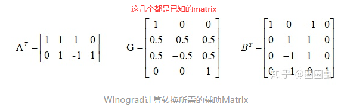
那么剩下的g和d表示什么？
- Winograd F(2x2,3x3)，到底在计算神马？
- “2x2”: **输出**4个结果（因为2x2 = 4）
- “3x3”: 卷积核是3x3（conv3x3s1的卷积核当然是3x3）
- 因此，需要输入的Feature Map就是4x4的matrix(输入数据)。
- Y 输出的matrix[2,2]，4个结果
- g 卷积核matrix[3,3]，9个数据
- d 输入的matrix[4,4]，16个输入
如何对快速卷积进行int8定点量化？
我们并不需要对Winograd的计算过程进行量化，而是将量化后的数据进行Winograd计算。除了Matrix G中有0.5，其他的Matrix都是Int8的整形数据了。那么只需要做一个简单的操作将Matrix G变成Int8整形就行了：G’ = G x 2
最后我们得到的Y’再除以4（为什么是4不是2呢？因为乘以了两次的，G与G^T）就是我们需要的Y了。我们的Int8 Convolution 计算流程变化如下：
Int8 Convolution 流程：- input_fp32 -> quantize -> int8-conv -> Int32 -> dequantize -> output_fp32
Int8 Winograd流程：- input_fp32 -> quantize -> int8-winograd -> Int32 -> dequantize -> output_fp32
二值模型(BNN)¶
在神经网络中的基本操作就是权重(W)和激活值(X)的卷积乘加操作(W*X)
L1范数是指向量中各个元素绝对值之和；L2范数是指向量各元素的平方和然后求平方根
实际项目中一直在用的binary_conv图示结果如下，其实就是BWN(不同卷积核的绝对值**相同**)改版，每个卷积核自身的绝对值都相同(c_in,k_h,k_w)【caffe/pytorch的卷积核维度一样】，但不同卷积核的绝对值**不相同**：
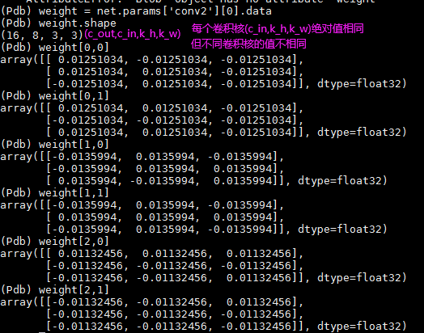
开山之作:《BinaryNet: Training Deep Neural Networks with Weights and Activations Constrained to +1 or -1.》
-
它首次提出一种方法，可以用随机梯度下降的方式训练同时使用二值化的
weights和activations的神经网络。二值权重{-1,1}替代浮点权重，作者通过sign函数获取:W_binary = sign(W_float32) -
对于
sign函数在0处不可导，其他倒数为0无法进行梯度传递，所以作者设计了**直通估计器：STE**，即使用clip(-1,x,1)的导数来拟合sign的导数。
- 其实论文中权重二值化反向传播时遇到
sign函数直接为输入的梯度(相当于src_grad*1)，激活二值化是clip(-1,x,1)函数的梯度拟合sign，也就是说output_grad = abs(input)>1--->grad==0*src_grad，当output_grad = abs(input)<=1--->1*src_grad
# 如果要进行激活二值化，第一个卷积层参数不能是二值，因为图片是8bit，如果直接二值化，丢失信息过多
# 1. 对激活值进行二值化的具体实现
class BinActive(torch.autograd.Function):
'''
Binarize the input activations for ***** BNN and XNOR *****.
'''
@staticmethod
def forward(ctx, input):
ctx.save_for_backward(input)
input = input.sign() # 使用y=x函数拟合梯度
return input
@staticmethod
def backward(ctx, grad_output, ):
input, = ctx.saved_tensors
grad_input = grad_output.clone()
# 开山之作BNN中激活值:当sign函数的输入的绝对值大于1的时候，将梯度置0可以得到更好的实验结果。
grad_input[input.ge(1)] = 0
grad_input[input.le(-1)] = 0
# 最终的梯度结果就是sign函数的梯度计算使用clip(-1,x,1)函数来拟合
return grad_input # 当在[-1,1]范围内，输入梯度是啥直接返回啥，不需要关心该阈值函数的实际导数
# 2.对权重进行二值化
class Binary_w(torch.autograd.Function):
@staticmethod
def forward(self, input):
output = torch.sign(input)
return output
@staticmethod
def backward(self, grad_output):
#*******************ste*********************
grad_input = grad_output.clone()
return grad_input
- 这样
weights二值化{-1,+1},激活值activation二值化{-1,+1},卷积过程两者只要进行XNOR+bitcout计算代替float32的累乘操作，速度提升很大。

XNOR-Net
该篇论文提出BWN+XNOR-Net两种二值化网络。
-
BWN(Binary Weight Networks):只对weights二值化{-1,+1}，对于activation仍然采用float32全精度，精度影响不大(resnet18除外)。 -
W_float= a*B,a:是尺度参数,B是二值矩阵{-1,1}，a的最优值=np.sum(abs(w)) / n（权重的L1范数的均值） -
推理步骤:
-
XNOR-Net是weights和activation都进行二值化 -
权重(W)二值化：
W_float= a*B，同上 - 激活值(X)二值化：
X_float = β*H,H是二值矩阵{-1,1},β的最优值是np.sum(abs(X)) / n（输入X的L1范数的均值） XNOR-Net的二值操作过程：
Bi-Real Net
作者发现常用的二值化网络有两个缺陷
-
1-bit CNN 的表达能力本身很有限，不如实数值的网络。
-
Bi-Real-Net 借用 残差的思想，用shortcut 传递网络中已有的实数值，从而提高二值化网络的表达能力。
- 卷积参数
{-1,1}，激活值{-1,1}，进行xnor+bitcout操作，结果出现非{-1,1}的**实数值**，但是这个实数值的输出如果经过下一层二值卷积就又会被二值化，造成极大的信息丢失。
-
1-bit CNN 在训练过程中有导数不匹配的问题导致难以收敛到很好的精度
-
激活值求导时，常用
clip(-1,x,1)来拟合sign函数的导数；但是clip函数与sign函数有差距（灰色斜线），这种计算方式会带来所谓的**导数值不匹配的问题**。提出**用二阶拟合 sign 的 ApproxSign 的导数来作为 sign 的导数，从而缩小导数值的不匹配问题**。这个带来了**约 12% 的性能提升**。
- 使用
Clip函数代替ReLU函数效果更好，因为x->{-1,1}，使用截断函数会更快收敛。
调参小技巧¶
-
Warm up:如果模型是从头训练(模型权重随机初始化)，可以用一个小的学习率先训练几个
epoch，假如一开始就采用较大的学习率容易出现数值不稳定；如果模型比较难训练可以考虑如下策略:如果是普通分类模型可以使用ImageNet的预训练模型初始化权重，如果是细粒度分类可以使用CUB-200-2011(Caltech-UCSD Birds-200-2011:细粒度识别数据集,注意测试集与ImageNet训练集有重叠)的预训练模型初始化权重。总结:无论是比赛还是其他，最好先找公开数据集训练个baseline再做模型迁移即可。 -
多训练几个epochs，平均一下就能得到更好的模型。一般训练后，选取最优模型，使用该模型进行固定学习率(
2e-4或者余弦退火学习率:效果更好，pytorch中有实现:CosineAnnealingLR)来多训练结果epoch，平均其权重即可。- 余弦退火学习率:设置一个基础学习率(0.02),然后设置
T_0=5,T_mult=x(x>=1),那么每到epoch=5,(1+T_mult)*T_0,(1+T_mult+T_mult**2)*T_0,...处回到最大的学习率(0.02)，其他epoch会自动按照cosin下降学习率
- 余弦退火学习率:设置一个基础学习率(0.02),然后设置
-
使用
fp16和fp32混合精度训练，可以快速收敛，尤其是对人脸识别训练来说。 -
数据处理，如果数据里面有脏数据，可以先训练一个
baseline，然后对每个类别的feature进行聚类，聚2个类，哪个类别的数据量多就选哪个做为正例，同时按正负样本的比例进行少量负例采样(大概是10%。 -
常规的数据增强：随机裁剪，角度旋转，亮度/对比度调节等
-
使用
Mixup、Cutout、Cutmix(一般更优)对比选择效果好的再配合labelsmooth一起。 -
Mixup:将随机的两张样本按比例混合，分类的结果按比例分配； Cutout:随机的将样本中的部分区域cut掉，并且填充0像素值，分类的结果不变；CutMix:就是将一部分区域cut掉但不填充0像素而是随机填充训练集中的其他数据的区域像素值，分类结果按一定的比例分配
-
使用**cosinelr**来衰减学习率(余弦函数衰减)，带有动量的
SGD -
如果你的**分类精度不够是因为有两类或者多类太相近造成的**，考虑使用其他
softmax，比如**amsoftmax**。 -
如果你的分类精度不够是**样本不均衡**造成的，考虑使用
focal loss -
尽可能使用全卷积网络来做landmark，不要直接用fc回归，回归真的不太稳定
目标追踪¶
Sort(多目标跟踪)
- 以
IOU作为前后两帧间目标关系度量指标 - 利用**卡尔曼滤波器**预测修正得到下一帧目标的精准框(OpenCV中已实现)。
- 思想:下一帧模型对A的预测框+对A目标的轨迹的预测框+两框的误差，利用卡尔曼滤波方程计算出最优框
- 通过**匈牙利算法(匹配线地位相同)对前后两帧中的框进行匹配(寻找最优解)，进化版是:**KM算法(匹配线带权重)
- 论文中使用的是匈牙利算法，但是实际代码是KM算法。
DeepSort(同一团队)
- 整体没啥改变，主要改变有两点:
- 加入特征提取网络，输入一张图片会输出一个向量，通过比对两个向量(128维度)之间的余弦距离，来判断两副输入图片是否是同一个目标(在行人重识别数据集上训练的)。
TensorRT¶
TensorRT为什么能加速?(单精度FP32半精度FP16)
-
TensorRT支持
FP16 或者 INT8的计算，而推理精度不发生明显的降低。只支持推理，不支持训练，训练阶段因为要进行梯度更新，训练后期每次梯度更新是微小的，这个时候需要高参数需要高精度，例如float32，但是只是推理的话对精度要求并不高，所以可以降低精度。 -
TensorRT对于网络结构进行了重构，把一些能够合并的运算合并在了一起，而且针对NVIDIA显卡做了多方面优化。
- 它把一些网络层进行了合并：比如
一个卷积层、一个偏置层和一个relu层，这三层是需要调用三次cuDNN对应的API，TensorRT对此进行了合并。 - 取消
concat层：在concat这一层，比如说这边计算出来一个1×3×24×24，另一边计算出来1×5×24×24，concat到一起，变成一个1×8×24×24的矩阵，这个叫concat这层这其实是完全没有必要的，因为TensorRT完全可以实现直接接到需要的地方，不用专门做concat的操作，所以这一层也可以取消掉。
- 它把一些网络层进行了合并：比如
TensorRT的流程
-
解析器解析模型：首先输入一个预先训练好的
FP32的模型和网络，将模型通过parser（解析器）等方式输入到TensorRT中-
在这个解析过程中可以设置模型的
DataType是用FP16还是使用INT8，-
FP32->FP16，仅仅Tesla P100/V100支持FP16?如果只是使用 float 16 的数据精度代替 float-32 ， 实际上并不会有多大的性能提升。真正提升性能的是half2mode，即使用了交叉存存储方式的模式(图片上相邻区域的 tensor 是 以16位 交叉存储的方式存在的链接) -
FP32->INT8,注意，这里传入的DataType::KFLOAT，是FP32，因为INT8 需要先用FP32的精度来确定转换系数，TensorRT自己会在内部转换成INT8。
-
-
-
TensorRT引擎：模型解析后，engine会进行模型优化，得到优化好的engine可以**序列化到内存（buffer）或文件（file），读的时候需要**反序列化，将其变成engine以供使用。然后在执行的时候创建context(上下文)，主要是分配预先的资源，engine加context就可以做推断（Inference）。
扩展
- TensorRT5加速yolov3
- caffe版本的yolov3加速，然后实际运用到项目上后，发现原始模型在TX2（使用TensorRT加速后，FP16）上运行260ms，进行L1 排序剪枝后原始模型由246.3M压缩到64.8M，但是时间运行只提速到了142ms
常用目标检测损失函数¶
L1或L2一般不用作框回归损失的原因
L1 loss的导数为常数，在训练后期，x很小时，如果lr不变，损失函数会在稳定值附近波动，很难收敛到更高精度。L2 loss训练初期，x值很大时，其导数也很大，训练初期训练不稳定。
Smooth L1 Loss
- 定义

-
实际目标检测框回归loss
- 预测的框坐标：
GT的框坐标：- 注意，这里是求和
sum，也有的会求均值mean
-
缺点
- 这里先求出四个点的loss，再相加，但实际四个点是相关联的，实际评价框检测的指标是使用
IOU，用这种方式很可能多个检测框IOU差异很大，但smooth l1 loss相同。
- 这里先求出四个点的loss，再相加，但实际四个点是相关联的，实际评价框检测的指标是使用
IOU Loss
-
定义2：
IOU Loss = -ln(IOU)|L_iou = 1 - iou -
缺点：无法优化无交集的边界框(
loss恒定为1)，不能反映两框之间的距离远近，且只要iou相同，两框的位置关系无法区分。
GIou Loss
C为B与B^gt最小外接矩形,相当于在IoU loss的基础上增加一个惩罚项，当bbox的距离越大时，惩罚项将越大，但是IoU和GIoU的值都一样，此时GIoU退化为IoU, 无法区分其相对位置关系
DIou Loss:不重叠仍然可以为边界框提供梯度，直接优化两框距离收敛更快，但是没有考虑长宽比。
-
缺点，没有考虑长宽比

-
DIoU-NMS 能够更好的引导bbox的消除，以后考虑使用
CIoU Loss + DIoU-NMS，为什么不使用CIOU_nms -
ciou是在Diou的基础上添加了影响因子，包含GT，预测的时候没有GT信息，不用考虑影响因子，所以直接用DIOU_nms即可
CIou Loss:Lciou = Ldiou + 长宽比
-
在
DIOU基础上加了一个影响因子av：加入了长宽比的考量(考虑了预测框长宽比拟合目标框的长宽比)v：用来衡量长宽比一致性的参数
-
a：权衡因子
-
这样
CIOU Loss考虑了:重叠面积、中心点距离，长宽比，效果会更好。 -
缺点：
v过于复杂，减慢收敛速度；v的导数中含有1/(w^2+h^2)这个值往往很大，通常会导致梯度爆炸。
Focal-EIoU Loss
EIOU Loss
Focal-EIoU Loss
**IOU_Loss：**主要考虑检测框和目标框重叠面积。
**GIOU_Loss：**在IOU的基础上，解决边界框不重合时的问题。
**DIOU_Loss：**在IOU和GIOU的基础上，考虑边界框中心点距离的信息。
**CIOU_Loss：**在DIOU的基础上，考虑边界框宽高比的尺度信息。
常用人脸识别损失函数link¶
人脸识别：本质上是分类问题(目的就是不同类的**类间间距够大，同一类的类内距离足够小**)。一般分类损失函数就是softmax loss(交叉熵损失)，但对于人脸就不够用了，因为**人脸特征差异不明显**，softmax loss对类间距离和类内距离控制的都不好，所以最后识别精度不高，泛化能力较差，常用Center-Loss、L-Softmax、A-Softmax、ArcFace、AM-softmax等
- softmax Loss:类间距离和类内距离控制的都不好，各类损失权重相同，类间类内都没做优化。
- Center Loss:主要优化了类内距离，但对类间距离控制不足(人脸方向还行(单类)，用于其他方向效果差于softmax)，引入真实类别的中心距离向量
C_yi，类内损失增大，优化后使类内距离更紧凑。λ 是超参，控制类内距离损失在当前样本损失中的比重。

- L-softmax Loss(Large-Margin Softmax Loss):类内距离和类间距离都能优化:借用
SVM思想，如果原来的softmax loss是只要支持向量和分类面的距离大于h就算分类效果比较好了，那么L-softmax loss就是需要距离达到mh（m是>=2正整数）才算分类效果比较好了。乘法角度间隔。
- 解释:很好理解，原先只需要
θ1>θ2就能分类，现在至少θ1>m*θ2，边界距离增加了m倍，更难训练了，但如果收敛好后类内距离会更大，类间距离会更好，因为这个m强迫你往这个方向收敛。通常用m调节训练难度，m越大效果越好，当然模型越不易收敛，常m=2,3,4
A-softmax loss(SphereFace):类似L-softmax，限制条件(归一化权重,bias置0):w=1,bias=0,代码中实现:归一化权重(w/w_2范数)，用角度增大间隔。
- AM-Softmax(余弦距离:同CosFace)：
A-softmax(角度距离)的改进。限制条件(归一化权重和特征向量,bias置0):w=1,x=1,bias=0,代码中实现:归一化权重(w/w_2范数)，归一化特征向量(x/x_2范数)，减法余弦间隔
- ArcFace loss(角度间隔) **:
A-softmax(角度距离)的改进，角度θ加上间隔m。限制条件(归一化权重和特征向量,bias置0):w=1,x=1,bias=0,代码中实现:归一化权重(w/w_2范数)，归一化特征向量(x/x_2范数)，用角度来增大间隔。**加法角度间隔

- 先将特征向量L2归一化，权重L2归一化，计算两者的cos(θ)，求反余弦arccos(θ)得到特征
x与真实权值W之间的夹角θ，添加角度间隔m，再求余弦cos(θ+m)，将所有的log乘以特征尺度s，然后将log送到softmax函数得到各类别概率。再用Ground Truth和One Hot Vector一起算出交叉熵损失
ArcFace loss终极大法:联合margin:结合所有的margin惩罚(cos(m1*θ+m2)−m3)
人脸识别评估指标¶
-
FAR(误识别率:
False Accept Rate):不同人判定为同一人的比例：right/类间匹配总次数 -
FRR(拒识别率:
False Reject Rate):同一人判定为不同人的比例：right/类内匹配总次数
- EER(等错误率:
Equal Error Rate):FAR是随阈值增大而减小的，FRR是随阈值增大而增大的。因此它们一定有交点为EER，从而选取最佳阈值。常取FAR=1e-3时，FRR的值作为参考，值越小，性能越好(论文中常常TAR =xx @ FAR=0.00100)来评测
常见边缘处理算子¶
Sobel算子
Sx= Sy=
3*3Sobel两个方向的算子在图像上滑动，模板与其覆盖的图像3*3区域9个像素进行卷积，求和后得到此方向的**边缘检测幅值**。
- A为图像
- Gx和Gy分别是水平和竖直方向算子的卷积结果
- G则是最终得到的边缘检测幅值
-
θ值则是边缘方向
-
Sobel算子还有一种变种，是各向同性Sobel算子(更准确)，其模板为
- 模板的权值是离中心位置越远则权值影响越小，但是上面的模板使其距离一样长，例如:中心点到(0,0)点距离是根号2，到(1,0)点距离也是根号2，这样就消除了权重的影响。
Canny算子(6步)
- 彩色图片灰度化。
- 使用高斯滤波器，以平滑图像，滤除噪声。
- 高斯卷积核尺寸越大，检测器对噪声的敏感度越低，但是边缘检测的定位误差也将略有增加，一般而言
5x5是最合适的。
- 高斯卷积核尺寸越大，检测器对噪声的敏感度越低，但是边缘检测的定位误差也将略有增加，一般而言
- 计算图像中每个像素点的梯度强度和方向。
- 图像中的边缘可以指向各个方向，所以这步常用一阶微分算子(如:Sobel算子)，得到像素点的梯度G和方向theta。
- 应用非极大值抑制，使得边缘细化。
- 主要作用是"瘦边"，仅仅基于梯度值提取的边缘仍然很模糊，将局部最大值之外的所有梯度值抑制为0(将当前像素的梯度强度与沿正负梯度方向上的两个像素的梯度强度进行比较，最大则保留，否则被抑制)
- 应用**双阈值检测**来优化边缘连接处理。
- 非极大值抑制后，边缘已经很明显了，但还是存在噪声和颜色变化引起的一些边缘像素(噪点)，可以通过高低阈值来解决(用弱梯度值过滤边缘像素，并保留具有高梯度值的边缘像素)。
- 如果边缘像素的梯度值小于低阈值，则会被抑制；
- 如果边缘像素的梯度值小于高阈值并且大于低阈值，则将其标记为**弱边缘像素(保留？)**；
- 如果边缘像素的梯度值高于高阈值，则将其标记为**强边缘像素(保留)**；
- 阈值的选择取决于给定输入图像的内容。
- 非极大值抑制后，边缘已经很明显了，但还是存在噪声和颜色变化引起的一些边缘像素(噪点)，可以通过高低阈值来解决(用弱梯度值过滤边缘像素，并保留具有高梯度值的边缘像素)。
- 通过抑制孤立的弱边缘最终完成边缘检测(二值化图像输出结果)。
- 强边缘像素保留，因为它们是从图像中的真实边缘中提取出来的，然而，弱边缘区域是否保留？(因为这些像素可以从真实边缘提取也可以是因噪声或颜色变化引起的)，保留真实的，去除噪声引起的。
- 通常，由真实边缘引起的弱边缘像素将连接到强边缘像素，而噪声响应未连接。为了跟踪边缘连接，通过查看弱边缘像素及其8个邻域像素，只要其中一个为强边缘像素，则该弱边缘点就可以保留为真实的边缘。
图像滤波¶
图像滤波的目的
- 消除图像中混入的噪声
- 为图像识别抽取出图像特征
滤波种类
- 线性滤波：均值滤波、高斯滤波
- 非线性滤波：中值滤波、双边滤波
均值滤波
- 均值滤波，对**高斯噪声**表现较好，对椒盐噪声表现较差。
blur = cv2.blur(src_img,(7,7)) # 核尺寸一般有 3x5,5x5,7x7,一般核越大，图片处理完的效果越模糊
中值滤波(非线性)
- 中值滤波主题思想是取相邻像素的点，然后对相邻像素的点进行排序，取中点的灰度值作为该像素点的灰度值
- 该方法在去除**脉冲噪声、椒盐噪声**的同时还能保留图像的细节部分
- 中值滤波花费的时间比均值滤波更久，但其在噪声的消除能力上更强。
高斯滤波(高斯模糊)
高斯滤波一般针对的是**高斯噪声**，能够很好的抑制图像输入时**随机引入的噪声**，将像素点跟邻域像素看作是一种高斯分布的关系，它的操作是将图像和一个高斯核进行卷积操作：
双边滤波
-
目的是**保边去噪**，原理:二维高斯函数生成距离模板，使用一维高斯函数生成值域模板，两者相乘即可。
-
距离模板:其中，(k,l)为模板窗口的中心坐标；(i,j)为模板窗口其他系数的坐标；σ为高斯函数的标准差。
-
值域模板
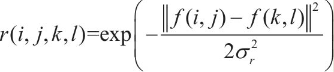
-
两者相乘得到双边过滤器模板:
小总结
- 均值模糊无法克服边缘像素信息丢失的缺陷，原因是均值滤波是基于平均权重的。
- 高斯模糊部分克服了该缺陷，但无法完全避免，因为没有考虑像素值的不同。
- 高斯双边模糊-是边缘保留的滤波方法，避免了边缘信息丢失，保留了图像轮廓不变。
c++面试常问题目¶
栈内存和堆内存
- 栈内存:常分配给局部变量、临时变量、函数参数等，为编译器自动分配和释放
- 当在栈上分配一个新的变量时(或进入一个函数时)，栈的指针会下移，相当于在栈上分配了一块内存。。当这个变量的生命周期结束时，栈的指针会上移，相同于回收了内存。由于栈上的内存的分配和回收都是由编译器控制的，所以在栈上是不会发生内存泄露的，只会发生**栈溢出**，也就是分配的空间超过了规定的栈大小(一个线程的栈内存是有限的，通常来说是 8M 左右（取决于运行的环境）)。
- 堆内存:为成员分配和释放，一般由程序员自己申请、自己释放。否则发生内存泄露。典型为使用new申请的堆内容。
- 内存泄露:堆上的内存是由程序直接控制的，程序可以通过 malloc/free 或 new/delete 来分配和回收内存，如果程序中通过 malloc/new 分配了一块内存，但忘记使用 free/delete 来回收内存，就发生了内存泄露。
- 静态存储区:主要存放静态数据、全局数据和常量。内存在程序编译的时候就已经分配好，而且这块内存在程序的整个运行期间都存在。
c++中内存泄露和野指针
- 在类的构造函数和析构函数中没有匹配的调用new和delete函数
- 一是在堆里创建了对象占用了内存，但是没有显示地释放对象占用的内存；
- 二是在类的构造函数中动态的分配了内存，但是在析构函数中没有释放内存或者没有正确的释放内存
-
在释放对象数组时在delete中没有使用方括号
int *p = new int[10]方括号是告诉编译器这个指针指向的是一个**对象数组**，delete p如果没有方括号，那么这个指针就被默认为只指向一个对象，对象数组中的其他对象的析构函数就不会被调用，结果造成了内存泄露，正确做法delete [] p;
-
一个类里有指针成员变量，必须显示的写拷贝构造函数
- 如果没有定义拷贝构造函数，那么编译器就会调用默认的拷贝构造函数，如果类里有指针成员变量会被定义为将一个变量的地址赋给另一个变量，这种隐式的指针复制结果就是**两个对象拥有指向同一个动态分配的内存空间的指针**。当释放第一个对象的时候，它的析构函数就会释放与该对象有关的动态分配的内存空间。而释放第二个对象的时候，它的析构函数会释放相同的内存，这是错误的同时有可能造成堆崩溃。
-
没有将基类的析构函数定义为虚函数
- 当基类指针指向子类对象时，如果基类的析构函数不是virtual，释放由一个基类指针指向的派生类对象时，只会调用基类的析构函数，不会触发动态绑定，那么子类的析构函数将不会被调用，子类的资源没有正确是释放，因此造成内存泄露。
-
野指针：指向被释放的或者访问受限内存的指针
- 指针变量没有被初始化（如果值不定，可以初始化为NULL）
- 指针被free或者delete后，没有置为NULL, free和delete只是把指针所指向的内存给释放掉，并没有把指针本身干掉，此时指针指向的是“垃圾”内存。释放后的指针应该被置为NULL.
- 指针操作超越了变量的作用范围，比如返回指向栈内存的指针就是野指针。
指针和引用
- 指针是一个变量，他的内容是所指向内存的地址；引用是某块内存的别名。
Sizeof 指针:得到的是指针本身的大小；Sizeof 引用：所指向的变量(对象)的大小。- 指针可以为空，引用不可为空；指针见异思迁，引用从一而终(只在定义时被初始化一次,之后不可变)；